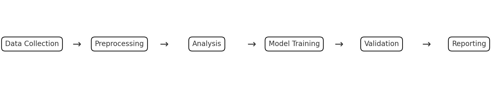

What is a build system or task runner?#
Introduction to Build Systems and Task Runners#
A build system is a collection of tools and scripts that automate the process of compiling source code into executable programs or libraries. It can handle tasks like tracking dependencies between files, compiling source code in the necessary sequence, and executing unit tests. Build systems are crucial in software development, especially in large projects with numerous source files and complex dependency chains. GNU Make and Makefiles are a common example of a build system.
A task runner is similar. It is a software utility designed to automate the execution of repetitive tasks in the software development process. These tasks can include but are not limited to, scripting routine operations such as minifying code, running tests, compiling source files, and deploying to production servers. Task runners streamline the workflow by reducing the need for manual intervention, enhancing consistency, and saving valuable time. They are particularly beneficial in complex projects where the frequency and complexity of these tasks can be substantial. By defining a series of tasks and their respective commands in a configuration file, task runners enable developers to execute complex sequences with simple commands, thus improving efficiency and productivity in the development lifecycle.
Note that here I will sometimes use these phrases interchangeably, though they are somewhat different.
A build system in this context addresses multiple challenges:
Workflow Management: Manages the execution order of various scripts and notebooks based on dependencies.
Data Integrity: Ensures that any changes in data or scripts trigger the re-run of dependent tasks, maintaining data integrity.
Reproducibility: Facilitates reproducibility of results, crucial in research settings, by automating the workflow.
Resource Efficiency: Saves computational resources by only re-running tasks whose dependencies have changed.
Collaboration: Aids in team collaboration by providing a standardized way to run and reproduce the entire workflow.
Discussion
When working on a large coding project, have you ever stepped away for a few weeks and then tried to return to the project only to find difficulty remembering the steps you used to get the results you had before?
Suppose you are trying to manage a complex data science workflow in a research setting. In a finance research setting, a data science project often involves several interdependent stages: data collection, preprocessing, analysis, model training, validation, and reporting. Each stage may depend on the output of the previous stages, and the project might include a mix of Python scripts, Jupyter notebooks, and data files in various formats.

Example of a Task Runner/Build System Managing a Project#
Suppose that we have a hypothetical project that completes runs a set of abstract tasks:
data collection, preprocessing, analysis, model training, validation, and reporting.
Each of these tasks depend on the previous task.
As an example, a build system might have a file that manages a project that looks like this.
This script is a file called dodo.py that uses the PyDoit Python-based build system.
The task runner script documents the scripts associated with each step as follows:
Data Collection: A script (
data_collection.py) gathers financial data from various sources.Preprocessing: Another script (
preprocess_data.py) cleans and preprocesses the data.Analysis and Modeling: A Jupyter notebook (
analysis.ipynb) performs data analysis and model training.Reporting: Finally, a script (
generate_report.py) compiles the results into a report.
The dodo.py script then looks like this:
# dodo.py for managing a data scinece research project workflow
def task_data_collection():
return {
'actions': ['python scripts/data_collection.py'],
'targets': ['data/raw_data.csv'],
'file_dep': [],
'clean': True,
}
def task_preprocessing():
return {
'actions': ['python scripts/preprocess.py'],
'file_dep': ['data/raw_data.csv'],
'targets': ['data/processed_data.csv'],
'clean': True,
}
def task_analysis():
return {
'actions': ['jupyter nbconvert --execute notebooks/analysis.ipynb'],
'file_dep': ['data/processed_data.csv'],
'targets': ['reports/analysis_output.html'],
'clean': True,
}
def task_model_training():
return {
'actions': ['python scripts/train_model.py'],
'file_dep': ['data/processed_data.csv'],
'targets': ['models/trained_model.pkl'],
'clean': True,
}
def task_validation():
return {
'actions': ['python scripts/validate_model.py'],
'file_dep': ['models/trained_model.pkl'],
'targets': ['reports/validation_report.txt'],
'clean': True,
}
def task_reporting():
return {
'actions': ['python scripts/generate_report.py'],
'file_dep': ['reports/analysis_output.html', 'reports/validation_report.txt'],
'targets': ['reports/final_report.pdf'],
'clean': True,
}
In this dodo.py:
Each
task_function defines a stage in the workflow.The
'actions'key specifies the command to run for each task.The
'file_dep'(file dependencies) key lists the files that the task depends on.The
'targets'key lists the files that the task produces.The
'clean'key, when set toTrue, allows PyDoit to clean up the targets if thedoit cleancommand is used.
With this setup, the entire workflow can be automated and executed in the correct order with a single command (doit), significantly streamlining the research process and ensuring consistency and reproducibility in the results.
This setup ensures that each stage of the workflow is executed in the correct order and only when its dependencies have changed, thereby enhancing efficiency and reproducibility.
Problem Solved by a Build System#
When the project becomes large enough and complex enough, the following problems may arise.
Difficulty in Reproducing Results Without a clear record of the ordering of how the scripts were run, reproducing results becomes challenging. A build system automates the full project from end-to-end and the script managing this workflow itself becomes the documentation of the ordering of the scripts.
Complex Dependency Management In data science, workflows often involve complex dependencies between data, scripts, and models. That is, not only do we have to worry about the order in which to run the scripts, we want to keep track of which script produces or alters each object of interest (intermediate data sets, model files, etc.). A build system manages and resolves dependencies, and itself documents how each object is modified by each script.
Time-Consuming Reruns of Unchanged Steps Rerunning entire workflows after minor changes is time-consuming and inefficient. A build system efficiently identifies and executes only those tasks that are affected by recent changes.
Error Propagation Errors in early stages can propagate unnoticed, affecting subsequent stages. A build system provides a systematic approach to detect errors early by validating outputs at each stage before moving to the next.
Lack of Standardization in Workflow Execution Variability in how different team members execute the workflow can lead to inconsistencies. A build system enforces a standardized process for executing workflows, reducing variability and enhancing collaboration.
Scalability Issues Managing larger datasets or more complex models can become challenging as the project scales. A build system facilitates scaling by automating and optimizing the workflow, making it easier to manage larger or more complex projects. A build system can even help to automatically parallelize the execution of a workflow, since it knows the dependencies and the necessary order needed to execute all the tasks. Python’s
PyDoitsystem provides such features to make this happen automatically, for example.
Documentation and Knowledge Transfer Inadequate documentation can hinder knowledge transfer, especially in large teams or long-term projects. A build system encourages the documentation of workflows, making it easier for new team members to understand and contribute to the project. This is not only beneficial for other team members. Your FUTURE you will thank you. I often forget details of my own workflow, sometimes after only walking away for a week or two. A build system will help you enormously even if you work alone most of the time.
Thus, a build system, by automating and standardizing various aspects of the data science workflow, can significantly mitigate these common pitfalls, leading to more efficient, reproducible, and collaborative research in data science settings.
GNU Make: The most commonly used build system in the world#
GNU Make is a widely-used build system that, while particularly prominent in C/C++ projects, offers a versatile toolset extendable to many different programming languages and environments. It functions by automating complex workflows, primarily the compilation process, through the interpretation of a Makefile. This file, central to its operation, details a set of rules and dependencies that guide the build process.
Contrary to a common misconception, GNU Make’s utility is not confined to C/C++ environments. Its capabilities are effectively applicable to a broad spectrum of programming tasks. For instance, it can be used to manage workflows involving scripting languages like Python or R, automate the generation of reports or data files, and even orchestrate complex data analysis pipelines. Its language-agnostic nature allows it to execute arbitrary shell commands, making it a powerful tool for a variety of automation tasks beyond just compilation.
Given its widespread adoption and flexibility, GNU Make is a tool that all data scientists should be at least aware of. Understanding its basic functions can significantly enhance the efficiency of managing various aspects of data science projects. The ability to automate repetitive tasks, ensure consistency in data processing, and manage complex dependencies makes GNU Make an invaluable asset in the toolbox of modern data scientists, regardless of their primary programming language.
Makefile: The Blueprint#
A Makefile is a script utilized by GNU Make, consisting of:
Targets: These are usually file names, representing the output of a build process.
Dependencies: Files that need to be updated before the target can be processed.
Rules: Commands that describe how to update or create a target.
# Sample Makefile
target: dependencies
command to build
Now, consider the dodo.py example file above. When written as a Makefile to be used with GNU Make, it would look like this:
Certainly! Here’s a similar (but not exactly equivalent) workflow of the provided dodo.py file translated into a Makefile for use with GNU Make. This Makefile will manage the same Python-based data science project, with tasks for data collection, preprocessing, analysis, model training, validation, and reporting.
# Makefile for managing a data science research project workflow
# Phony target to handle all tasks
.PHONY: all clean
# Default target
all: reports/final_report.pdf
# Data Collection
data/raw_data.csv:
python scripts/data_collection.py
# Preprocessing
data/processed_data.csv: data/raw_data.csv
python scripts/preprocess.py
# Analysis
reports/analysis_output.html: data/processed_data.csv
jupyter nbconvert --execute notebooks/analysis.ipynb
# Model Training
models/trained_model.pkl: data/processed_data.csv
python scripts/train_model.py
# Validation
reports/validation_report.txt: models/trained_model.pkl
python scripts/validate_model.py
# Reporting
reports/final_report.pdf: reports/analysis_output.html reports/validation_report.txt
python scripts/generate_report.py
# Clean task to remove generated files
clean:
rm -f data/raw_data.csv data/processed_data.csv models/trained_model.pkl
rm -f reports/analysis_output.html reports/validation_report.txt reports/final_report.pdf
In this Makefile:
Each target (like
data/raw_data.csv,data/processed_data.csv, etc.) represents an output of a task.The dependencies for each task (specified after the
:) determine when the task needs to be re-run.The commands under each target (like
python scripts/data_collection.py) are the actions to be performed.The
.PHONYrule is used to define targets that are not associated with files.The
alltarget is the default and will execute the entire workflow, building the final report.The
cleantarget provides a way to remove all generated files, similar to the ‘clean’ function in PyDoit.
This Makefile can be run using the make command to execute the entire workflow or specific tasks, and make clean to clean up the outputs.
GNU Make: Characteristics
Efficiency: Only rebuilds parts of a project that have changed.
Flexibility: Can be used for various types of projects beyond just C/C++.
Customization: Allows writing complex build rules.
Python PyDoit: An Python-based Alternative#
Python PyDoit is a task management and automation tool that offers several advantages, especially for Python-centric workflows, compared to GNU Make:
Ease of Installation with pip or conda:
PyDoit can be conveniently installed using pip, which is a standard tool in Python development.
This contrasts with GNU Make, which, while ubiquitous in Linux environments, may not be readily available on Windows systems without additional installation steps.
The ability to install PyDoit as part of the normal Python environment setup enhances its accessibility and ease of integration into existing Python projects.
Simplified Workflow Description:
PyDoit’s Python-based syntax and structure make it easier to describe and manage complex data science workflows.
Its configuration aligns naturally with the way data scientists typically structure their Python projects, offering a more intuitive approach to task automation.
Consistent Language Ecosystem:
PyDoit is written in Python, which is advantageous for those who write all their code in Python.
This consistency ensures that the entire codebase, including the automation scripts, is in a single, familiar language, reducing the learning curve and increasing the efficiency of managing workflows.
Being in the same language ecosystem as the main project code, PyDoit allows for more seamless integration and utilization of existing Python skills and tools.
I personally find that these features make PyDoit a particularly attractive option for data scientists and developers who are already immersed in the Python ecosystem and are looking for an effective way to automate their workflows. That said, PyDoit is not ubiquitous. There are many other such systems or task runners, even many others that are written in Python.
Examples of other Build Systems or Task Runners#
Here are some examples of other build systems and/or task runners along with the languages they are typically associated with or the languages they are written in:
Apache Ant (Ant Home Page): Primarily used with Java projects. Although mainly a build system for Java, it can also function as a task runner, executing predefined tasks.
Apache Maven (Maven Home Page): Also commonly used for managing Java projects.
Bazel (Bazel Home Page): Developed by Google, it supports multiple languages including Java, C++, and Python.
Celery (Celery Home Page): An asynchronous task queue/job queue based on distributed message passing, primarily used in Python applications.
CMake (CMake Home Page): Widely used for C and C++ projects, but also supports other languages.
Gradle (Gradle Home Page): Known for its use with Java, Groovy, and Kotlin.
Grunt (Grunt Home Page): A JavaScript task runner, primarily used for automating mundane tasks in web development.
Gulp (Gulp Home Page): A JavaScript-based build system, often used in web development. Another JavaScript task runner, known for its use in front-end web development for tasks like minification, concatenation, cache busting, etc.
Invoke (Invoke Home Page): A task runner written in Python, offering a clean and high-level API for running shell commands and defining/organizing task functions.
Just (Just Home Page): A handy command runner written in Rust, designed to save you from writing shell scripts.
MSBuild (MSBuild Home Page): The build system for Microsoft’s .NET framework.
Ninja (Ninja Home Page): Designed to be used with a higher-level build system; often used with C and C++ projects.
npm scripts (npm Documentation): Part of the npm package manager for JavaScript, allowing the definition of various scripts for task automation in the
package.jsonfile.pypyr (pypyr Home Page): A task runner written in Python, designed to handle complex workflows by chaining together different tasks.
Rake (Rake Home Page): A Ruby-based task runner that provides a standard way of handling repetitive tasks like building, packaging, or testing.
SCons (SCons Home Page): Written in Python, and used primarily for C, C++, and Fortran projects.
Webpack (Webpack Home Page): Popular in the JavaScript community, particularly for bundling web assets. Commonly used as a module bundler for JavaScript applications, it can also automate tasks like code transpilation, optimization, and more.
dodo.py: PyDoit’s Configuration File#
A dodo.py file in PyDoit is analogous to a Makefile in GNU Make. It defines tasks, which are Python functions or dictionaries, and their dependencies.
# Sample dodo.py
def task_hello():
return {
'actions': ['echo Hello World'],
'file_dep': ['input.txt'],
'targets': ['output.txt'],
}
For a more complex workflow with PyDoit, see the example at the beginning of this page. To see a working example, examine now the blank_project repository I’ve made available here: jmbejara/blank_project. We’ll now walk through this project, after concluding.
Conclusion#
Both GNU Make and Python PyDoit offer powerful solutions for automating build processes and task execution. The choice between them often depends on the specific requirements of a project, such as the programming language used, the complexity of the task, and the user’s familiarity with Python. While GNU Make is more traditional and widely used in compiling, PyDoit provides a more flexible and Python-centric approach to task automation.